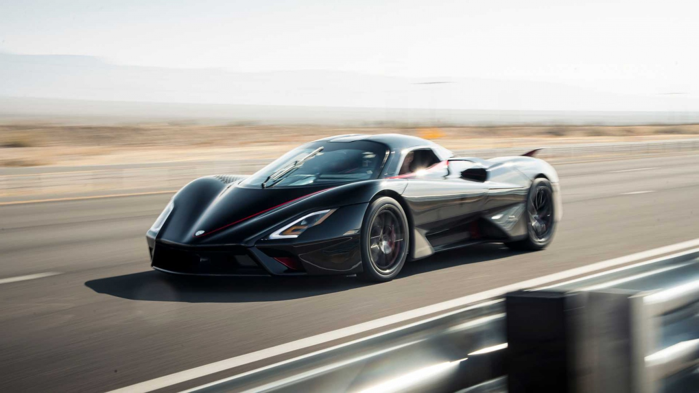

Самые быстрые автомобили на Земле

Мир автомобилей всегда вызывал восхищение и стремление к скорости. Каждый год инженеры и дизайнеры,
движимые жаждой инноваций и конкурентоспособности, создают настоящие шедевры автомобильной техники,
способные разгоняться до впечатляющих скоростей. Самые быстрые автомобили на Земле не только являются
символом технического прогресса, но и олицетворяют бесконечные возможности человеческой
изобретательности.
Соревноваться за звание самого быстрого автомобиля — это не просто гонка, это настоящая битва
технологий, в которой на кону стоят мощность, аэродинамика и инновационные решения. К каждому новому
рекорду прикладывается множество часов работы, преданных поклонников и безупречный дизайн, что позволяет
автомобилям максимально раскрыть свой потенциал на дороге и трассе.
В этом обзоре мы погрузимся в мир молниеносных автомобилей, которые покорили сердца автолюбителей и
завоевали уважение инженеров. Мы рассмотрим не только их впечатляющие технические характеристики, но и
историю их создания. Присоединяйтесь к нам, чтобы узнать, какие автомобили сегодня претендуют на титул
самых быстрых и что стоит за их невероятной производительностью.
1.Bugatti Chiron Super Sport 300+
Bugatti Chiron Super Sport 300+ - это высокопроизводительный суперкар, выпущенный французским
производителем Bugatti. Этот автомобиль стал знаменит благодаря тому, что в 2019 году он стал первым
серийным автомобилем, который преодолел отметку в 300 миль в час (482.8 км/ч).Chiron Super Sport 300+
оснащается 8.0-литровым двигателем W16 с четырьмя турбокомпрессорами. Автомобиль развивает невероятные
1600 л.с. (1180 кВт) и 1600 Нм крутящего момента, что обеспечивает крайне высокую производительность на
всех этапах движения. Chiron Super Sport 300+ способен разгоняться от 0 до 100 км/ч менее чем за 2.5
секунды, что ставит его в один ряд с самыми быстрыми серийными автомобилями в мире. В ходе тестов
автомобиль достиг рекордной скорости 490.48 км/ч (304.77 миль/ч), что было официально зарегистрировано
на тестовой трассе в Германии, специализирующейся на высокоскоростных испытаниях.

2.SSC Tuatara

SSC Tuatara — это американский суперкарт, разработанный компанией SSC North America, который стал
известен благодаря своим экстремальным характеристикам и стремлению к установлению рекордов скорости.
Представленный в 2020 году, Tuatara стал флагманом бренда и продолжением их предыдущей модели — SSC
Ultimate Aero. SSC Tuatara оснащен 5.9-литровым V8 с двойным турбонаддувом, способным развивать мощность
до 1,750 л.с. на высокооктановом топливе. При использовании обычного гоночного топлива (E85) мощность
составляет около 1,350 л.с. Tuatara на протяжении своих тестов продемонстрировал способность достигать
максимальной скорости более 480 км/ч (порядка 300 миль/ч). Автомобиль способен разгоняться от 0 до 100
км/ч за менее чем 2.5 секунды, что делает его одним из самых быстрых среди серийных автомобилей.
3.Koenigsegg Jesko Absolut
Koenigsegg Jesko Absolut — это шведский суперкар, представленный компанией Koenigsegg Automotive в
2020
году. Он назван в честь отца основателя компании, инженерии и инноваций, что уже служит
свидетельством
принципов, закладываемых в этот автомобиль. Jesko Absolut разработан с целью стать самым быстрым
серийным автомобилем в мире и является усовершенствованной версией модели Jesko. Jesko Absolut
оснащён
5.0-литровым V8 с двойным турбонаддувом, который способен развивать мощность до 1600 л.с. и имеет
крутящий момент в 1500 Нм. Эта мощность доступна при использовании топлива E85, что позволяет
достижение
выдающихся характеристик. Автомобиль оборудован 9-ступенчатой автоматической трансмиссией Light
Speed
Transmission (LST), которая обеспечивает быстроту переключения передач и улучшает динамические
характеристики. Jesko Absolut может разгоняться от 0 до 100 км/ч менее чем за 2.5 секунды, что
подчеркивает его статус одного из самых быстрых автомобилей в мире. Jesko Absolut разрабатывался c
прицелом на максимальную скорость, и компания Koenigsegg утверждает, что он способен превысить 500
км/ч.
Официальных тестов для подтверждения этого числа пока не проводилось, однако ожидания основаны на
передовой аэродинамике и лёгком кузове.

4.Hennessey Venom F5

Hennessey Venom F5 — это суперкар, разработанный американской компанией Hennessey Performance
Engineering. Он был представлен в 2020 году с целью установить новый рекорд скорости для серийных
автомобилей и стать одним из самых быстрых автомобилей в мире. Venom F5 разработан для достижения
впечатляющей максимальной скорости, а также для обеспечения исключительной производительности и
динамики. Venom F5 комплектуется 6.6-литровым V8 с двойным турбонаддувом, который обеспечивает
максимальную мощность около 1,817 л.с. и крутящий момент до 1,617 Нм. Суперкар оснащён 7-ступенчатой
автоматической трансмиссией с двойным сцеплением, что позволяет обеспечить быструю и плавную смену
передач. Venom F5 способен разгоняться от 0 до 100 км/ч менее чем за 2 секунды, что делает его одним
из
самых быстрых автомобилей в мире. Hennessey утверждает, что Venom F5 способен превысить 480 км/ч
(около
300 миль/ч), хотя официальные тесты для подтверждения этого рекорда еще не проводились на момент
моего
обучения.
5.Bugatti Veyron Super Sport
Bugatti Veyron Super Sport — это одна из самых известных и знаковых моделей в мире суперкаров,
разработанная французским автопроизводителем Bugatti. Она была представлена в 2010 году как
улучшенная
версия оригинального Veyron, и на протяжении своего существования Veyron Super Sport устанавливал
новые
стандарты скорости и производительности. Veyron Super Sport оснащён 8.0-литровым W16 с четырьмя
турбинами. Эта выдающаяся силовая установка генерирует около 1,200 л.с. и 1,500 Нм крутящего
момента,
что делает его одним из самых мощных серийных автомобилей в мире. Автомобиль имеет 7-ступенчатую DSG
(двойное сцепление) трансмиссию, которая обеспечивает быструю и плавную смену передач. Veyron Super
Sport способен разгоняться от 0 до 100 км/ч всего за 2.5 секунды, что подчеркивает его мощь и
динамические характеристики. Bugatti Veyron Super Sport стал первым серийным автомобилем, который
превысил отметку в 400 км/ч. В 2010 году он был зафиксирован с максимальной скоростью 431 км/ч (267
миль/ч), что на тот момент стало мировой зоной рекорда. Эта скорость достигается благодаря
улучшенной
аэродинамике и дополнительным усилиям в конструкции.